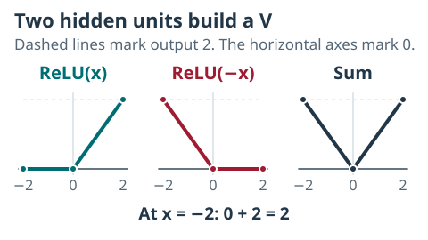

A study log can lean toward reading or toward practice. How far from balance is the week? If we plot the size of the imbalance against the signed difference in hours, the graph bends. Use this small, checkable target to find out what adding a hidden layer changes.
For this controlled experiment, the input is reading time minus practice time. The toy label is the absolute difference. We know how we generated the labels, so we can check exactly which shapes the models can express. A single straight line has one slope everywhere.
Worked example
At x=−1, 0, +1, targets are 1, 0, 1. A line through the two outer points is flat at 1 and misses the middle. Choosing a different straight line moves the error elsewhere.
Formal notation
x = reading hours − practice hours. y = |x| is the nonnegative label. A linear baseline predicts ŷ = wx + b, with learned slope w and intercept b.
Which slope fits the segment from −1 to 0, and which fits the segment from 0 to +1?
Reveal answer
The target falls from 1 to 0 across the first interval, so its slope is −1. It rises from 0 to 1 across the second, so its slope is +1.
Put a switch after a weighted sum
A perceptron turns a weighted sum into a binary decision by thresholding it. A rectified linear unit, or ReLU, keeps positive values and replaces negative ones with zero. ReLU therefore tells us how far an input has crossed a threshold. This is an activation function.
Worked example
Use the signed study difference as input. With weight 1 and bias 0, Bo at +1 produces a ReLU output of 1 and Ava at −1 produces 0. With bias −1, a positive output requires a reading surplus greater than 1 hour.
Formal notation
a = wx+b is the pre-activation. A step unit returns 1 when a>0 here and 0 otherwise. ReLU(a)=max(0,a).
import torch
x = torch.tensor([-1.,0.,1.,2.])
a = x-1
print("before activation:",a.tolist())
print("step:",(a>0).int().tolist())
print("ReLU:",torch.relu(a).tolist())
For x=3, w=2 and b=−4, what do the step and ReLU units return?
Reveal answer
The weighted sum is 2×3−4=2. The step returns 1 under our strict-positive threshold. ReLU returns 2.
Combine two hidden units into a bent prediction
A hidden unit calculates an intermediate feature. Two units can retain different kinds of evidence. Let one respond to a reading surplus, and the other to a practice surplus. An output unit adds their two magnitudes. This gives one possible solution before we attempt training.
Worked example
At x=−2 the hidden values are 0 and 2. At x=+2 they are 2 and 0. Both lead to output 2. The kink comes from the two hidden activations. Stacking weighted sums without an activation would still yield just a weighted sum.
Formal notation
h₁=max(0,x), h₂=max(0,−x), ŷ=h₁+h₂. A multilayer perceptron uses one or more hidden layers like this between its input and output.

import torch
x = torch.tensor([[-2.],[0.],[2.]])
W = torch.tensor([[1.],[-1.]])
h = torch.relu(x @ W.T)
prediction = h @ torch.tensor([[1.],[1.]])
print("hidden rows:", h.int().tolist())
print("outputs:",prediction.flatten().tolist())
There are two hidden units, each reading one input. One weight for each unit gives two rows and one column. The batch of three examples is a separate dimension.
Follow one example through a computation graph
A computation graph records the order of operations. A forward pass substitutes values from input to prediction to loss. To keep the arithmetic visible, inspect just one active hidden unit. Its output has its own weight v. A loss measures the prediction error before any weight changes.
Worked example
Use x=2, target y=2, hidden weight w=0.5, bias b=0, output weight v=1.5 and output bias 0. Forward values are a=1, h=1, ŷ=1.5, error ŷ−y=−0.5 and loss 0.125.
Formal notation
a=wx+b; h=max(0,a); ŷ=vh; L=(ŷ−y)²/2. The factor 1/2 will cancel the 2 in the derivative of a square.
import torch
x, y = torch.tensor(2.), torch.tensor(2.)
a = 0.5*x + 0
h = torch.relu(a)
prediction = 1.5*h
loss = (prediction-y)**2 / 2
print("a, h, prediction, loss:", [t.item() for t in (a,h,prediction,loss)])
Reveal the output
a, h, prediction, loss: [1.0, 1.0, 1.5, 0.125]
Check your understanding
If the target changes from 2 to 1.5, which of the four forward values changes?
Reveal answer
Only the loss changes, becoming zero. The three values before the loss use the input and parameters, not the target.
Trace a gradient back to the first weight
Module 03 used the chain rule to carry a change in mean back to a score weight. Use the same reasoning through a hidden unit. At a positive pre-activation the ReLU slope is 1. At a negative pre-activation its slope is 0. Backpropagation multiplies local slopes along a path; contributions from paths into a shared parameter add.
Worked example
Start with the prediction error −0.5. A one-unit change in h changes ŷ at rate v=1.5. A change in a passes through the active ReLU at rate 1. Increasing w changes a at rate x=2. Multiplying gives the loss gradient −1.5 for w.
Formal notation
∂L/∂w=(ŷ−y)·v·ReLU′(a)·x. The partial derivative is the loss slope as w changes with the other parameters fixed. At exactly zero ReLU has a corner; PyTorch uses gradient zero there.
import torch
w = torch.tensor(0.5,requires_grad=True)
x = torch.tensor(2.)
h = torch.relu(w*x)
loss = (1.5*h-2)**2 / 2
loss.backward()
print("hand:", -0.5*1.5*1*2)
print("autograd:", w.grad.item())
Reveal the output
hand: -1.5
autograd: -1.5
Check your understanding
Why does the hidden weight receive a zero gradient from an example whose pre-activation is −2?
Reveal answer
Small changes in that pre-activation keep the hidden output at zero. The zero local slope multiplies the other factors on this path.
Make an update and test the new loss
A negative gradient says that a small increase in the weight should lower the loss for this example. Gradient descent subtracts the gradient times a positive learning rate. Change only w here so that the before-and-after comparison has one cause.
Worked example
With learning rate 0.1, w becomes 0.5−0.1×(−1.5)=0.65. The prediction becomes 1.95 and the loss becomes 0.00125. Check the actual loss after the change, especially if the step size is large.
Formal notation
w_new=w_old−η(∂L/∂w). η, pronounced eta, controls step size. The derivative comes from the old weight.
import torch
w = torch.tensor(0.5,requires_grad=True)
def objective(weight):
prediction = 1.5*torch.relu(2*weight)
return (prediction-2)**2 / 2
before = objective(w)
before.backward()
with torch.no_grad():
w -= 0.1*w.grad
print("w:",round(w.item(),3))
print("loss:",round(before.item(),5),"to",round(objective(w).item(),5))
Reveal the output
w: 0.65
loss: 0.125 to 0.00125
Check your understanding
What happens for the same example if η=1 instead of 0.1?
Reveal answer
w jumps to 2. The prediction becomes 6 and the loss becomes (6−2)²/2=8. A direction that helps for a small move can overshoot for a large one.
Train and compare on the same held-out inputs
Fit two models to five labeled examples, then predict four new input values that were set aside. The baseline learns a slope and intercept. The network learns two input weights and two output weights, with its hidden biases fixed at zero. We deliberately start these units with opposite input signs so both sides of the origin can respond. The starting magnitudes do not implement the target rule.
Worked example
Both models see the signed differences −2, −1, 0, 1, and 2 during training. Both receive the same held-out differences −1.5, −0.5, 0.5, 1.5 at evaluation. The targets follow the same known absolute-value rule on both sets. Inspect every prediction as well as the average error. The final four lines show which hidden unit responds on each side of zero.
Formal notation
MSE = Σᵢ(ŷᵢ−yᵢ)²/n averages squared error across n examples. The training optimizer uses only training examples. Test MSE uses frozen model parameters.
import torch
from torch import nn
train_x = torch.tensor([[-2.],[-1.],[0.],[1.],[2.]])
test_x = torch.tensor([[-1.5],[-0.5],[0.5],[1.5]])
line = nn.Linear(1,1)
net = nn.Sequential(nn.Linear(1,2,bias=False),nn.ReLU(),
nn.Linear(2,1,bias=False))
with torch.no_grad():
line.weight.zero_()
line.bias.zero_()
net[0].weight.copy_(torch.tensor([[0.6],[-0.3]]))
net[2].weight.fill_(0.6)
for name, model in [("line",line),("network",net)]:
optimizer = torch.optim.SGD(model.parameters(),lr=0.1)
for step in range(120):
optimizer.zero_grad()
loss = ((model(train_x)-train_x.abs())**2).mean()
loss.backward()
optimizer.step()
with torch.no_grad():
pred = model(test_x)
print(name,"predictions:", [round(y.item(),3) for y in pred.flatten()])
print("test MSE (4 decimals):",round(((pred-test_x.abs())**2).mean().item(),4))
if name == "network":
hidden = model[:2](test_x)
for x_row, h_row in zip(test_x, hidden):
print("x", x_row.item(), "hidden", [round(v, 3) for v in h_row.tolist()])
Reveal the output
line predictions: [1.2, 1.2, 1.2, 1.2]
test MSE (4 decimals): 0.29
network predictions: [1.5, 0.5, 0.5, 1.5]
test MSE (4 decimals): 0.0
x -1.5 hidden [0.0, 1.411]
x -0.5 hidden [0.0, 0.47]
x 0.5 hidden [0.5, 0.0]
x 1.5 hidden [1.5, 0.0]
Check your understanding
A classmate trains on the four test labels too and reports an improvement on those same four. Which part of the comparison breaks?
Reveal answer
Those four labels now helped choose the parameters. Reserve fresh independent records to measure performance on examples the training procedure has not seen.
Explain the comparison through the features
The held-out squared error favors the network on this particular V-shaped task. The line was forced into a single slope. The hidden units could follow separate slopes to the left and right. Inspect their activations to connect the numerical result to the functions each model could express.
Worked example
The activations printed after training reveal the split: the first hidden unit responds to the positive test inputs, and the second responds to the negative ones. Now change the scientific question. If the target is twice the signed difference plus 1, a straight line with slope 2 and intercept 1 predicts all four labels exactly. Which model you need depends on the shape of the target.
Formal notation
A linear function f(x)=wx+b has one slope w. A ReLU network can be piecewise linear: different input intervals can have different slopes, separated by activation boundaries.
import torch
x = torch.tensor([-1.5,-0.5,0.5,1.5])
label = 2*x + 1
prediction = 2*x + 1
print("straight-line labels:",label.tolist())
print("MSE for the matching line:",((prediction-label)**2).mean().item())
Reveal the output
straight-line labels: [-2.0, 0.0, 2.0, 4.0]
MSE for the matching line: 0.0
Check your understanding
Would four held-out synthetic inputs be enough to claim the network predicts real students’ scores reliably?
Reveal answer
No. These targets measure a constructed difference in hours. A claim about scores requires actual score labels and evaluation on records representative of the intended students.
Practice
Question 1
For x=−3, use h₁=ReLU(2x+1), h₂=ReLU(−x−1) and ŷ=h₁+2h₂. Compute both hidden values and the prediction.
Hint
Substitute x in the parentheses, then replace a negative result with zero.
Reveal the worked answer
The pre-activations are −5 and 2, hence the hidden values are 0 and 2. The prediction is 0+2×2=4.
Question 2
A network has h=ReLU(wx+b), ŷ=vh and half-squared loss. Let x=3,w=1,b=−1,v=2,y=5. Calculate ∂L/∂w and ∂L/∂v.
Hint
Begin with the prediction error, then trace each path separately.
Reveal the worked answer
a=2, h=2, ŷ=4, and ŷ−y=−1. The weight w has gradient (−1)×2×1×3=−6. The output weight v has gradient (−1)×h=−2.
Question 3
Using the previous values, update only w with learning rate 0.01. Check the result by recomputing the loss.
Hint
Subtract the scaled gradient from w. Keep b and v fixed.
Reveal the worked answer
w becomes 1.06, a becomes 3×1.06−1=2.18 and ŷ becomes 4.36. Loss falls from 0.5 to 0.64²/2=0.2048.
Question 4
Two straight-line layers compute h=3x−1 and ŷ=2h+4. Can their composition give the V-shaped label?
Hint
Substitute h into the output and collect terms.
Reveal the worked answer
The result is ŷ=6x+2. It has the same slope everywhere and cannot reproduce a function with slopes −1 and +1 on opposite sides of zero.
Question 5
A baseline predicts 1.2 for four held-out targets 1.5, 0.5, 0.5, 1.5. Calculate its MSE and interpret it.
Hint
Square each difference before averaging.
Reveal the worked answer
The squared errors are 0.09, 0.49, 0.49, and 0.09. The MSE is 1.16/4=0.29 hours squared. This measures error on these four synthetic inputs.
Question 6
Design a second evaluation to see whether a trained model’s behavior extends beyond the observed hour differences.
Hint
Distinguish new points inside the training range from points outside it.
Reveal the worked answer
Freeze both models. Select held-out differences outside [−2,2], generate the labels using the same stated rule, and report the new MSE separately. These examples test extrapolation. They would still give no estimate of real exam performance.